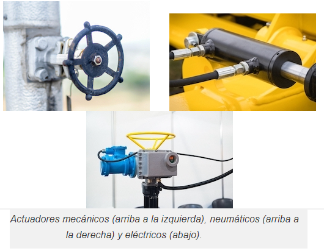

¿Qué es un transductor?
Un transductor define como un dispositivo fundamental en el sistema de control de medidores eléctricos. Actualmente, son muy utilizados en los sistemas de automatización y control para registrar grandes magnitudes. Y no sólo nos estamos refiriendo a las magnitudes más conocidas como son: temperatura y presión; también sirven para registrar caudales o concentración de gases.
¿Para qué sirven?
Este dispositivo transforma una magnitud física en una señal eléctrica. Así los medidores pueden detectar magnitudes físicas como: presión, temperatura, humedad, entre otras. Y convertirlas en señales eléctricas cuya interpretación es importante para servicios como pruebas no destructivas.
¿Cómo funciona?
El funcionamiento se basa en energías de entrada y de salida. Las energías de entrada más comunes que recibe son: calor, sonido, y luz. Éstas son transformadas en señales de salida captadas por los medidores. Es así como se puede tener registro de grandes magnitudes físicas en un proceso controlado.
Además de esto, existen parámetros del funcionamiento del transductor que a continuación definiremos:
- Exactitud:Se refiere al verdadero valor de la variable a detectar sin errores sistemáticos en la medición. Debe ser lo más alta posible.
- Precisión:Al igual que la exactitud, la precisión debe ser lo más alta posible. Este parámetro se define como la existencia o no existencia de una pequeña variación aleatoria en la medición de una variable.
- Rango de funcionamiento:Las características fundamentales con las que debe de cumplir este parámetro son: exactitud, precisión y amplitud.
- Velocidad de respueta:Es la capacidad que tiene de responder a los cambios en la variable detectada por un tiempo corto, preferentemente instantáneo.
- Calibración:Debe ser aplicada pocas veces o casi nunca. Y cuando se requiera debe ser fácil de calibrar.
- Fiabilidad:Este parámetro se mide por las pocas ocasiones en las que el dispositivo de medición falla.
- Sensibilidad:La sensibilidad (S) de un transductor determina la cantidad de cambio que ocurre en el voltaje de salida (VO) cuando el voltaje de suministro (VS) cambia, con la presión medida (Pm) y la presión nominal (Pr) del transductor permaneciendo constantes
- Alimentación o consumo:La cantidad de energía que se requiere para poner en marcha al sensor.
- Error:El error de la medida, es la desviación que presentan las medidas practicas de una variable de proceso con relación a las medidas teóricas o ideales, como resultado de las imperfecciones de los aparatos y de las variables parásitas que afectan al proceso.
- Error:Valor leído en el instrumento – Valor ideal de la variablemedida.
- Error Absoluto:Valor leído – Valor verdadero.
- Error Relativo:Error Absoluto / Valor verdadero.
- Error Estático:Si el proceso está en condiciones de régimen permanente.
- Error Dinámico:En condiciones dinámicas el error varía considerablemente debido a que los instrumentos tienen características comunes a los sistemas físicos; absorben energía del proceso y esta transferencia requiere cierto tiempo para ser transmitida, lo cual da lugar a retardos en la lectura del instrumento. Siempre que las condiciones sean dinámicas , existirá en mayor o menor grado el error dinámico, su valor depende del tipo de fluido del proceso, de su velocidad, del elemento primario, de los medios de protección, etc. Error Dinámico = Valor instantáneo – Valor indicado por el instrumento.
- Error Medio:es la media aritmética de los errores en cada punto de medida determinados para todos los valores crecientes y decrecientes de la variable medida.
Tipos de transductores
Los transductores se dividen en dos clases principales: sensores y actuadores. A partir de estas clases tenemos distintos tipos de transductores:
- Electromagnéticos:transforman energía eléctrica en magnética.
- Capacitivos:utilizados en los medidores industriales, miden la presión con alta precisión.
- De temperatura: convierten la medición de temperatura en corriente eléctrica.
- Magnéticos:se definen como dispositivos electromecánicos compuestos por una parte mecánica elástica y un transductor eléctrico que genera una señal.
- Fotoeléctricos: transforman luz en electricidad.
- De presión o resistivos:transmiten mediante corrientes con voltaje fijo, un valor de presión medido por un sensor elástico.
- De fuerza:son capaces de percibir deformaciones provocadas por fuerzas, y convertir estos datos en señales eléctricas.
¿Qué es un actuador?
Un actuador es un dispositivo que recibe una entrada de energía y la convierte en movimiento o fuerza, y es un componente esencial en muchas tecnologías modernas y campos de la ingeniería. Desde la robótica hasta las energías renovables, los actuadores desempeñan un papel fundamental en el control y la automatización de diversos procesos y sistemas. Los hay de muchas formas y tipos, cada uno con capacidades y usos únicos
Tipos de actuadores
Los actuadores se presentan en diversas formas, y cada tipo tiene una función específica en función de la aplicación. Dos categorías principales definen los actuadores: el tipo de movimiento y la fuente de energía.
Tipo de movimiento del actuador
Los actuadores pueden clasificarse en función de su tipo de movimiento, lineal o rotativo. Los actuadores lineales producen un movimiento lineal en línea recta, mientras que los actuadores rotativos producen un movimiento rotativo en una trayectoria circular.
Actuadores lineales
- Los actuadores lineales mueven objetos a lo largo de una línea recta y utilizan una correa y polea, cremallera y piñón o husillo de bolas para convertir la rotación del motor eléctrico en movimiento lineal.
- Los actuadores lineales se detienen a una distancia lineal fija y son conocidos por su alta repetibilidad y precisión de posicionamiento, su facilidad de instalación y funcionamiento, su bajo mantenimiento y su capacidad para soportar entornos adversos.
- Estos actuadores se utilizan habitualmente en los sectores de la alimentación, la automoción y la manipulación de materiales, entre otros, para tareas de empuje, tracción, elevación y posicionamiento.
Actuadores rotativos
- Los actuadores rotativos convierten la energía en movimiento giratorio a través de un eje para controlar la velocidad, la posición y la rotación de los equipos.
- Estos actuadores tienen un motor de rotación continua y son de uso versátil.
- Un motor eléctrico es un actuador rotativo accionado por una señal eléctrica. Tienen un par elevado, un par constante durante la rotación en ángulo completo, compatibilidad con diferentes diámetros, ejes huecos con holgura cero, el doble de rendimiento, bajo mantenimiento y pueden alcanzar cualquier grado de rotación.
- Los actuadores rotativos se utilizan en equipos médicos, radares y sistemas de monitorización, robótica, simuladores de vuelo, industria de semiconductores, fabricación de maquinaria especial y defensa.
Fuentes de alimentación de los actuadores
Hay varios tipos de actuadores: neumáticos, hidráulicos, eléctricos, magnéticos, térmicos y mecánicos, cada uno con sus ventajas e inconvenientes. El tipo de actuador utilizado en una aplicación depende de los requisitos específicos de dicha aplicación, como el nivel de fuerza, el tiempo de respuesta y la durabilidad necesarios.
- Actuadores neumáticos: Los actuadores neumáticos utilizan aire comprimido para generar movimiento. Pueden utilizarse para diversas aplicaciones, como mover piezas de máquinas o controlar posiciones de válvulas. Suelen preferirse para aplicaciones que requieren una gran fuerza, tiempos de respuesta rápidos o entornos a prueba de explosiones.
- Actuadores hidráulicos:Los actuadores hidráulicos utilizan la presión del fluido para generar movimiento. Suelen utilizarse para aplicaciones pesadas, como equipos de construcción, maquinaria de fabricación y robots industriales. Los actuadores hidráulicos ofrecen altos niveles de fuerza, durabilidad y fiabilidad.
- Actuadores eléctricos:Los actuadores eléctricos utilizan energía eléctrica para generar movimiento. Pueden accionarse mediante motores de CA o CC y suelen utilizarse en aplicaciones que requieren un control preciso, poco ruido y escaso mantenimiento. Los actuadores eléctricos se utilizan habitualmente en sistemas de automatización, dispositivos médicos y equipos de laboratorio.
- Actuadores magnéticos y térmicos:Los actuadores magnéticos y térmicos son dos tipos de actuadores que utilizan cambios magnéticos y de temperatura para generar movimiento, respectivamente. Los actuadores magnéticos utilizan campos magnéticos para generar fuerza. Los actuadores térmicos utilizan la dilatación o contracción de los materiales en respuesta a los cambios de temperatura. Ambos actuadores se utilizan habitualmente en sistemas microelectromecánicos (MEMS) y otras aplicaciones miniaturizadas.
- Actuadores mecánicos:Los actuadores mecánicos utilizan mecanismos físicos como palancas, engranajes o levas para generar movimiento. Los actuadores mecánicos se utilizan habitualmente en aplicaciones en las que el bajo coste, el funcionamiento sencillo y la durabilidad son importantes. Algunos ejemplos son las máquinas de manivela, los sistemas de válvulas manuales y las cerraduras mecánicas.